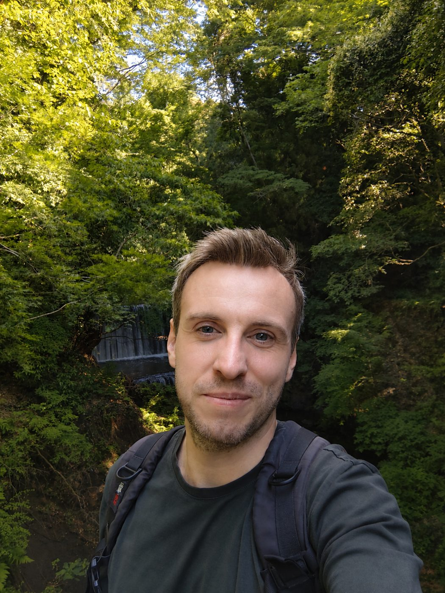

Engineer by training, photonics researcher by passion
I am a postdoctoral researcher at RIKEN (Japan), specializing in integrated photonics, nanophotonics and optoelectronics, with a particular focus on photonic integrated circuits and their applications in quantum technologies.
I graduated in engineering (Physics Engineering) from INSA Toulouse and obtained my PhD in 2022 at LAAS-CNRS, Université de Toulouse. After postdoctoral research at Toulouse INP (ENSEEIHT), I joined the Quantum Optoelectronics Research Team of Dr. Yuichiro Kato at the RIKEN Center for Advanced Photonics as a JSPS Postdoctoral Fellow, and I now hold a RIKEN Special Postdoctoral Researcher fellowship.
My research covers the design, fabrication and experimental characterization of integrated photonic devices on lithium niobate and silicon nitride: integrating carbon-nanotube single-photon emitters into photonic circuits, electro-optically tunable resonators, and novel integrated spectroscopic systems. Along the way I've built expertise in nanofabrication, optical characterization, photonic device design and experimental instrumentation in international, multidisciplinary teams.

Three ways I work with light
Optoelectronics & quantum light
Carbon-nanotube single photons on chip, integrated spectrometry, refractometric and gas sensors, interferometric displacement sensing.
Explore →Cleanroom & integrated photonics
Designing and fabricating photonic integrated circuits on silicon nitride and lithium niobate, from layout to tested chip.
Explore →AI & high-performance computing
Neural networks on supercomputers for sensor calibration and for optimizing photonic devices.
Explore →Career path
Research positions & education
Postdoctoral Researcher
2024 → nowRIKEN Special Postdoctoral Researcher (2026–), JSPS International Research Fellow (Apr 2024 – Apr 2026). Advisor: Dr. Yuichiro Kato.
Postdoctoral Researcher
2022 → 2023Optoelectronics for Embedded Systems. Advisor: Dr. Olivier Bernal.
PhD, Photonics and Optoelectronic Systems
2019 → 2022Thesis: Integrated long period waveguide gratings for refractometric and gas sensing applications
Master in Engineering, Physics Engineering
2012 → 2018Internships
- 2017Engineer Intern, Sydney Astrophotonics Instrumentation Laboratory, University of Sydney, AustraliaAdvisor: Dr. Sergio Leon-Saval
- 2016Engineer Intern, Laboratory for Physics and Chemistry of Nano-Objects (LPCNO), ToulouseAdvisor: Dr. Julian Carrey
- 2015–16Part-time Engineer Intern, National Laboratory for Intense Magnetic Fields (LNCMI), ToulouseAdvisor: Jeremy Grisolia
Teaching
- 2018–23Part-time assistant professor, computer programmingToulouse INP (ENSEEIHT)
Expertise
Fellowships & awards
Papers & talks
- 2026journal
Photonic Waveguide Circuit Integrated with Carbon Nanotube Single-Photon Source Operating at Room Temperature
ACS Photonics - 2026journal
- 2025poster
Photonic Integrated Circuit with System on Chip for Sub-Picometric Displacement Sensor
Conference poster - 2025journal
- 2024journal
Optical Feedback FM-to-AM Conversion With Photonic Integrated Circuits for Displacement Sensing Applications
Journal of Lightwave Technology - 2024journal
Optical Feedback FM-to-AM Conversion with integrated Micro-Ring Resonator for Displacement Sensing Applications
Journal of Physics: Conference Series - 2023journal
Distributed curvature sensing using long period fiber grating and machine learning numerical analysis
Optics Letters - 2022journal
- 2022conference
Gas Sensor Based on Silicon Nitride Integrated Long Period Grating
2022 IEEE Sensors - 2022conference
Non-Uniform Sampling Theory applied to FM Channel Optical Feedback Interferometry for Displacement Sensors
2022 IEEE Sensors - 2022conference
Towards Integrated Optical Feedback FM-to-AM Conversion in Silicon Nitride for Displacement Sensing Applications
2022 IEEE Sensors - 2022thesis
Integrated long period waveguide gratings for refractometric and gas sensing applications
PhD thesis, Université de Toulouse - 2022journal
- 2021journal
Integrated Width-Modulated SiN Long Period Grating Designed for Refractometric Applications
Journal of Lightwave Technology - 2020conference
Integrated Silicon Nitride Horizontal Long Period Grating for Refractometric Gas Sensing applications
2020 IEEE I2MTC
Always up to date on ORCID and Google Scholar.
Let's talk photonics
Open to collaborations, invited talks and new research opportunities in integrated and quantum photonics.
clement.deleau@riken.jp